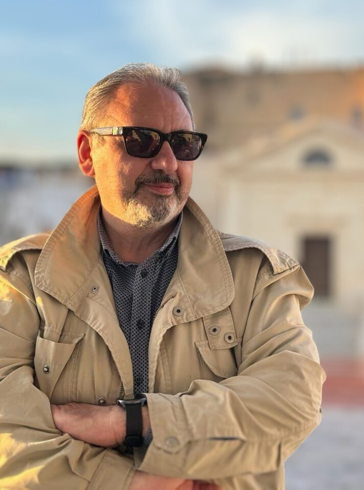

Erasmo Stasolla.
La passione per la storia. Il legame con i luoghi. L’attenzione alle persone.

La memoria di un Paese passa anche dalle storie delle persone.
Nato a Palagianello nel 1970, Erasmo Stasolla affianca alla sua esperienza nella Polizia Penitenziaria l’impegno nel volontariato e la passione per la scrittura. La storia italiana, la cronaca e la Terra delle Gravine sono fra le radici del suo lavoro narrativo.
Nel 2025 pubblica con Giacovelli Editore il suo primo romanzo, Verità sepolte, al quale ANSA dedica un approfondimento. Nel 2026 escono Peppino e Cento nomi: memorie familiari e anni di piombo, sempre tra fatti documentati e invenzione narrativa.
Scrivere per tenere aperte le domande.
Nei suoi progetti convivono la ricerca documentaria e l’invenzione, i misteri nazionali e le memorie familiari. La distinzione fra fatti e finzione accompagna il lavoro sulle storie ispirate a vicende reali.
Una particolare attenzione va ai giovani lettori: raccontare il passato significa anche rendere comprensibili persone, luoghi ed eventi che non tutti conoscono. Il territorio entra nei romanzi attraverso la vita dei personaggi, i ricordi e le relazioni.